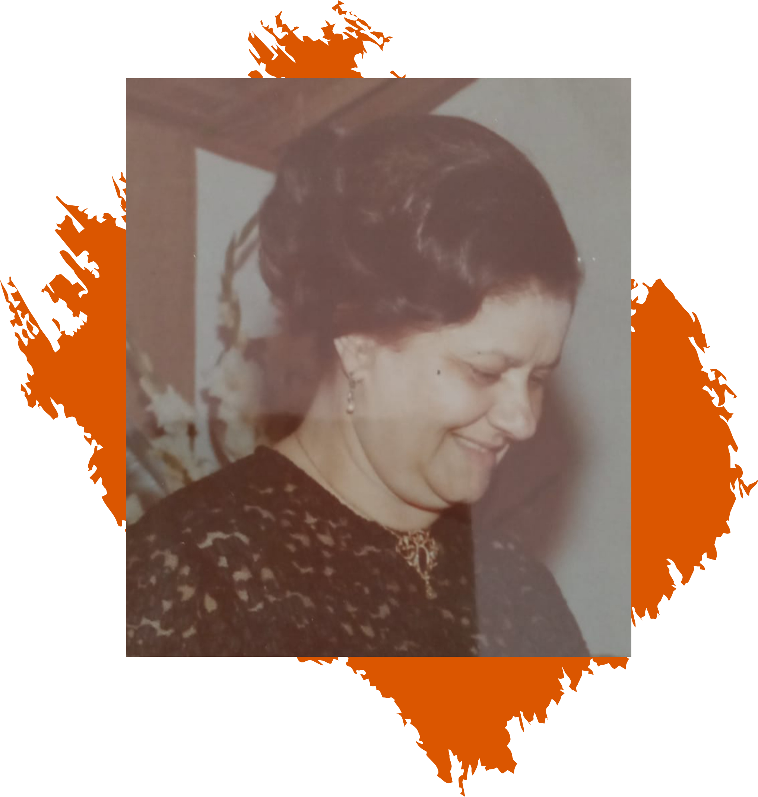

A Associação Beneficente Maria Pequena é uma organização sem fins lucrativos que trabalha para melhorar a vida de crianças e adolescentes em Poço Fundo - MG.
Como o apoio de nossos associados e parceiros, queremos suprir as necessidades básicas de cada pessoa atendida - as carências mais elementares que vêm antes do conforto. Nosso objetivo não é apenas distribuir recursos às famílias necessitadas. entendemos que as famílias não sofrem apenas por necessidade material, mas também por necessidades físicas, emocionais, intelectuais, sociais, afetivas e espirituais.
Os associados da Maria Pequena entendem que a família é a célula primária da sociedade, o maravilhoso projeto criado por Deus do qual todos nós participamos. Portanto, tratar dos problemas da família é, em essência, tratar dos problemas fundamentais de nossa sociedade. Acreditamos que as crianças e adolescentes sejam as peças mais sensíveis deste quebra-cabeça familiar, pois reservam em si o potencial de uma sociedade mais justa e fraterna.
Nossa História

A criação da Associação Beneficente Maria Pequena foi uma iniciativa familiar inspirada no trabalho e dedicação da Sra. Maria Abdala Assi, a Maria Pequena. Seus filhos, netos e bisnetos seguiram seu exemplo de boa -obreira em Poço Fundo e fundaram a associação com objetivo de perpetuar seu ideal de levar amor e carinho a quem mais precisa. Apesar de ter nascido em família, a participação na Maria Pequena não está restrita apenas aos seus descendentes; todos que compartilham dos mesmos princípios são convidados a unir forças em benefício das crianças de Poço Fundo.

Presidente
Gustavo Roque da Silva Assi